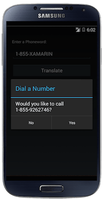
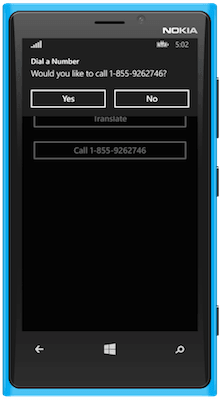

Exercise 4: Adding support for dialing the phone
Duration
15 minutes
Goals
The goal will be to add in some platform-specific behavior into our Phoneword application which will allow the user to dial the phone and to display an alert view.
|  |  |

|
Assets
There are some existing assets provided for this exercise in the Part 04 Resources folder. Specifically, there is a starter project you can use if you were unable to finish the prior exercise within the allotted time.
In addition, there are sample implementations to dial the phone for each of the platforms that you can use when you are implementing the logic.
- PhoneDialer.iOS.cs
- PhoneDialer.Android.cs
- PhoneDialer.WinPhone.cs
Exercise Challenge
Using the job aids to give you the information you need, try to add the device specific code. The specific steps you will need to do are:
- Add an event handler for the Call Button which will handle the call logic.
- The handler should prompt the user whether to dial the given phone number - you can see an example of the alert being presented for each platform in the screen shots above. Use the built-in Xamarin.Forms
Page.DisplayAlertAPI. - Define a new interface called
IDialerwhich will act as an abstraction for dialing the phone. It should provide a single method which takes astringand returns aboolsuccess code. - Add code in your handler to use the
DependencyServiceto locate an implementation of the dialer interface and use it to dial the phone if the user dismisses the alert and indicates they want to dial the phone. - You will need to provide a platform-specific implementation of the
IDialerinterface in each of the platform projects; an example implementation for each is provided in the Part 04 Resources assets folder included with this lab. You will need to add the appropriate registration code so the system can find the implementation usingDependencyService. - Try working through each of the steps on your own, if you need some help, you can check the steps below.
Uri strings such as http: and tel: with the Device.OpenUri method. You could use that API here to dial the phone. For example:
Device.OpenUri (new Uri("tel:" + translatedNumber));
However, it's not guaranteed that each platform would support the dialer in this fashion, and there is no way to tell if the call was successful, so using a platform-specific dependency is a better solution for this case.
Steps
Prompt the User when the Call Button is pressed.
First, let's add some behavior to the CallButton. In this case, we will need to perform the following tasks:
- Wire up an event handler to
Clickon theCall Button- just like we did earlier for the Translate Button. - Prompt the user using
Page.DisplayAlertto ask if they'd like to dial the number. - This method is
Task-based, so useasyncandawaitto work with it naturally. - It takes a title, message and the string for the accept and
cancelbuttons. - It returns a
boolindicating whether the accept button was pressed to dismiss the dialog. - Use the parameters:
- Title = "Dial a Number"
- Message = "Would you to call xxxx", using the translated number.
- "Yes" and "No" for the buttons.
- Go ahead and run the application using the easiest platform for your configuration to test the code - it should display the alert and allow you to dismiss it with either a Yes or No response.
Page.DisplayAlert would be to abstract out your message, much like we will do with the dialer. However, in this instance the API does exactly what we want - presents an OK/Cancel choice and allows the user to select one, so we'll use it.
Implement platform-specific logic to dial the phone
Next, let's create the abstraction for dialing the phone and add it into each of our platform-specific projects.
- Create an interface abstraction for dialing the phone - name it
IDialer. It should have a single method calledDialthat takes astringand returns abool. - This interface should be placed in the shared project - then we will provide an implementation in each of the platform projects.
- There are three pre-supplied implementations of the
IDialerinterface in the Part 04 Resources folder. Copy each one into the appropriate project. Make sure the implementation matches up with the interface. - In each implementation, add a
[Dependency]assembly-level attribute to register the implementation. These can be placed into the same source file as the implementation of each dialer.
Dial the phone
Finally, let's invoke our phone dialer logic from the Call Button.
- If the user responds affirmatively, then lookup the phone dialer using the
DependencyServiceAPI. - Use the
IDialerto dial the phone.
Test the Application
- Run the application using the most convenient platform and go ahead and translate and then dial a number.
- Most emulators and simulators will not property simulate the dialer - Windows Phone and the Android SDK emulator are an exception to this.
- You might get an exception from a simulator or emulator when trying to dial the phone - it depends on your configuration. If this happens, just comment out the call to dial the phone, or wrap it in a
try / catchstatement. If you have a real device, try running the application there. - If you have time try each of the platforms out and try stepping through the code to see it jump into the platform specific code.
Summary
You have seen how to abstract out platform features and make them accessible to the portable code that is shared across the platforms. You can use this approach for other areas not wrapped by Xamarin.Forms in order to create highly-sharable and testable code. You can even begin creating components with this approach to be shared across other projects or even with other developers.